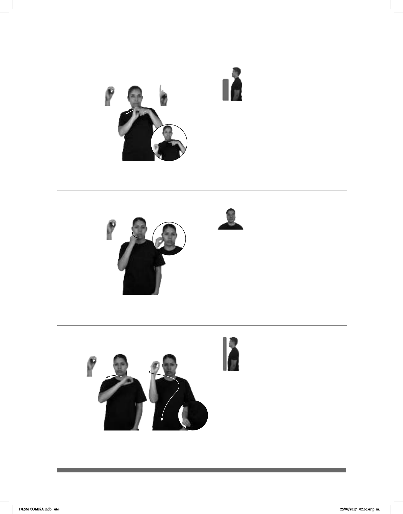

445
Seña: SM
O.1
Palma hacia la izquierda.
Del rostro a la cintura.
Movimiento: La mano se mueve
formando el número siete.
1. v. tr. Hacer que alguien
haga algo o se comporte de cierta
manera, recurriendo para ello a la
autoridad o a la fuerza. 2. sust. f.
Hecho de tener alguien que actuar o
comportarse de cierta manera porque
algo o alguien se lo impone, lo exige
con autoridad o por la fuerza.
(O-54)
(A)
CINTURÓN-DE-SEGURIDAD pos-TUYO OBLIGACIÓN
Es tu obligación usar cinturón de seguridad.
Seña: SM
O.1
Palma hacia adentro.
Sobre el lado derecho
de la barbilla pasa a la mejilla.
Movimiento: La mano se mueve
formando un arco.
sust. m. Sacerdote
cristiano que dirige y administra un
distrito eclesiástico; en la Iglesia
Católica es nombrado directamente
por el Papa.
MÉXICO PAPA
izquierda
él-REGAÑAR-a- CL:“4” OBISPO
derecha
El papa regañó a los obispos en México.
(O-53) Obispo
Seña: SB
MD O.1, MB 1.
MD palma hacia el
frente, MB palma hacia abajo.
MD y MB a la altura
del pecho del centro al lado dere-
cho.
Movimiento: MD recto.
Ciudad del estado de
Morelos, perteneciente a los
Estados Unidos Mexicanos.
pro-YO VIAJAR
allá
YA
Yo viajé a Oaxtepec.
(O-52)
DLSM COMISA.indb 445 25/09/2017 02:56:47 p. m.